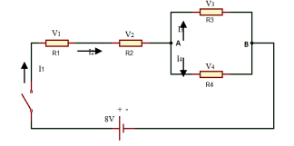
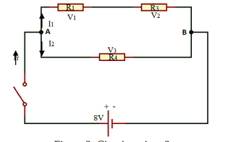

LEYES DE KIRCHHOFF
Tópicos relacionados
Circuitos con resistencias en series y en paralelo, resistencia equivalente, Leyes de Kirchhoff.
Objetivo
Determinar experimentalmente el comportamiento de la intensidad de corriente y la tensión en un circuito mixto.
Materiales a usar
| Materiales |
Cantidad |
| Panel de montajes | 1 |
| Interruptor | 1 |
| Conectores | 10 |
| Resistencias (ver tabla 1) | 1 de cada valor |
| Cables de conexión | 6 |
| Multímetro | 2 |
| Fuente de alimentación | 1 |
Montaje y procedimiento
Mide los valores de las resistencias y anótalos en la tabla 1.
| Resistencia nominal (Ω) |
Valor medido (Ω) |
| 100 | |
| 150 | |
| 220 | |
| 1k | |
Parte 1

- Monta el circuito según el esquema 1 y ajusta la fuente a 8V
- Mide las corrientes I1, I2, I3 e I4 del circuito, asimismo, mide las respectivas tensiones en los resistores V1, V2, V3 y V4. Anota estos valores en la tabla 2.
- Apaga la fuente de alimentación
Tabla 2. Valores medidos de la intensidad y la tensión en los resistores parte 1
| V1 (V) |
V2 (V) |
V3 (V) |
V4 (V) |
I1 (mA) |
I2 (mA) |
I3 (mA) |
I4 (mA) |
| | | | | | | |
Parte 2

- Monta el circuito según el esquema 2 y ajusta la fuente a 8V
- Mide las corrientes ITot., I1 e I2 del circuito, asimismo, mide las respectivas tensiones en los resistores V1, V2 y V3. Anota estos valores en la tabla 3.
- Apaga la fuente de alimentación
Tabla 3. Valores medidos de la intensidad y la tensión en los resistores parte 2
| V1 (V) |
V2 (V) |
V3 (V) |
ITot (mA) |
I1 (mA) |
I2 (mA) |
| | | | | |
Evaluación
- De las tensiones parciales registradas en las tablas 2 y 3, calcula la tensión total de cada circuito. ¿Qué concluyes?
- De las corrientes parciales registradas en las tablas 2 y 3, calcula la corriente total de cada circuito. ¿Qué concluyes?
- Compara la corriente que entra al nodo A de cada circuito con las corrientes que salen del mismo. ¿Qué concluyes?
- Realiza la suma total de las tensiones en el circuito 1 y el circuito 2. ¿Qué concluyes de los resultados?
Bibliografía
- Serway, R. Física Volumen 2. Ed. McGraw Hill
- Tipler, P. Física Volumen 2. Ed. Reverté
- Hewitt, P. Física Conceptual. Ed. Addison Wesley
- Alonso, M. Finn, E. Física Volumen. Ed. Pearson
- Halliday, D. Resnick R. Krane, K. Física Tomo 2. Ed. CECSA
- Tippens, P. Física Fundamental. Ed. McGraw Hill